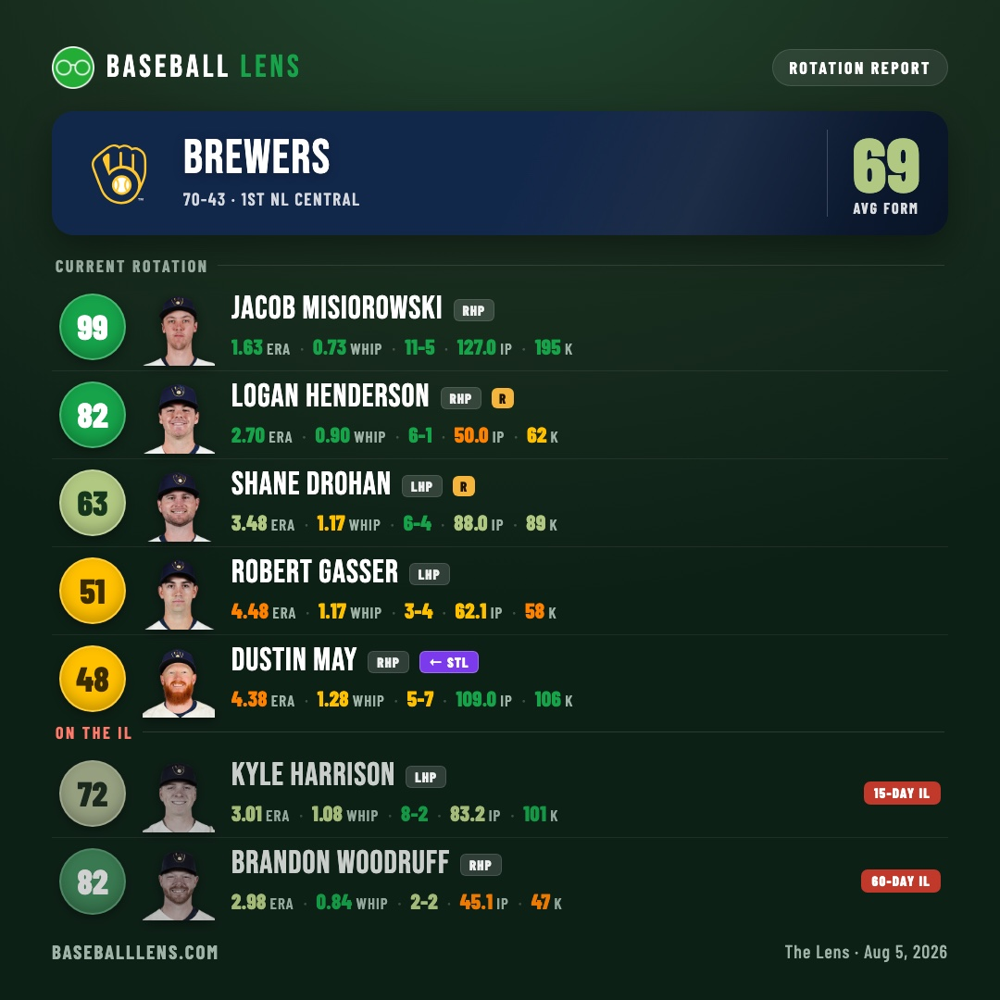
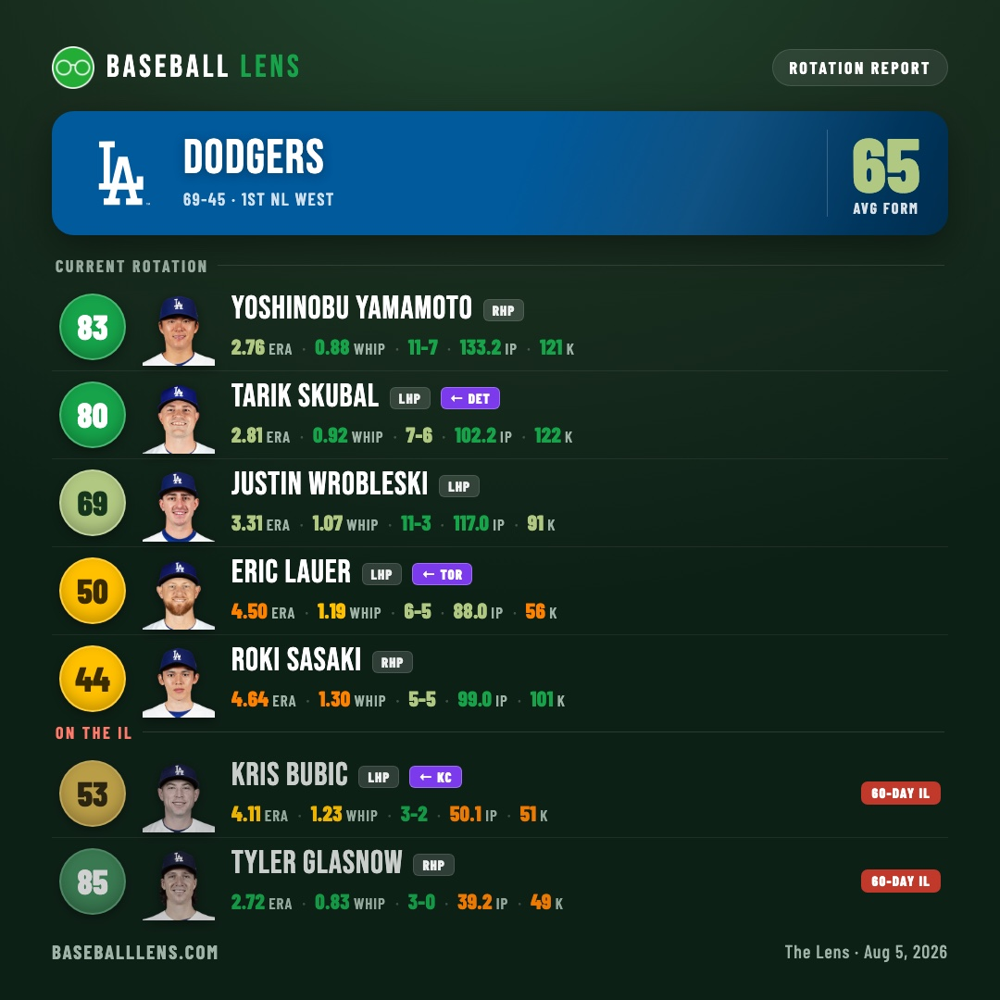
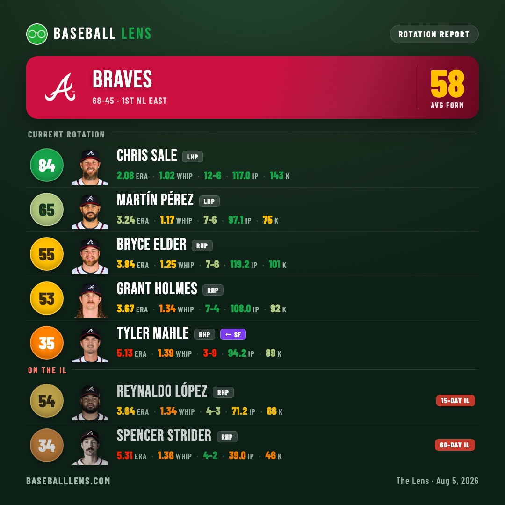
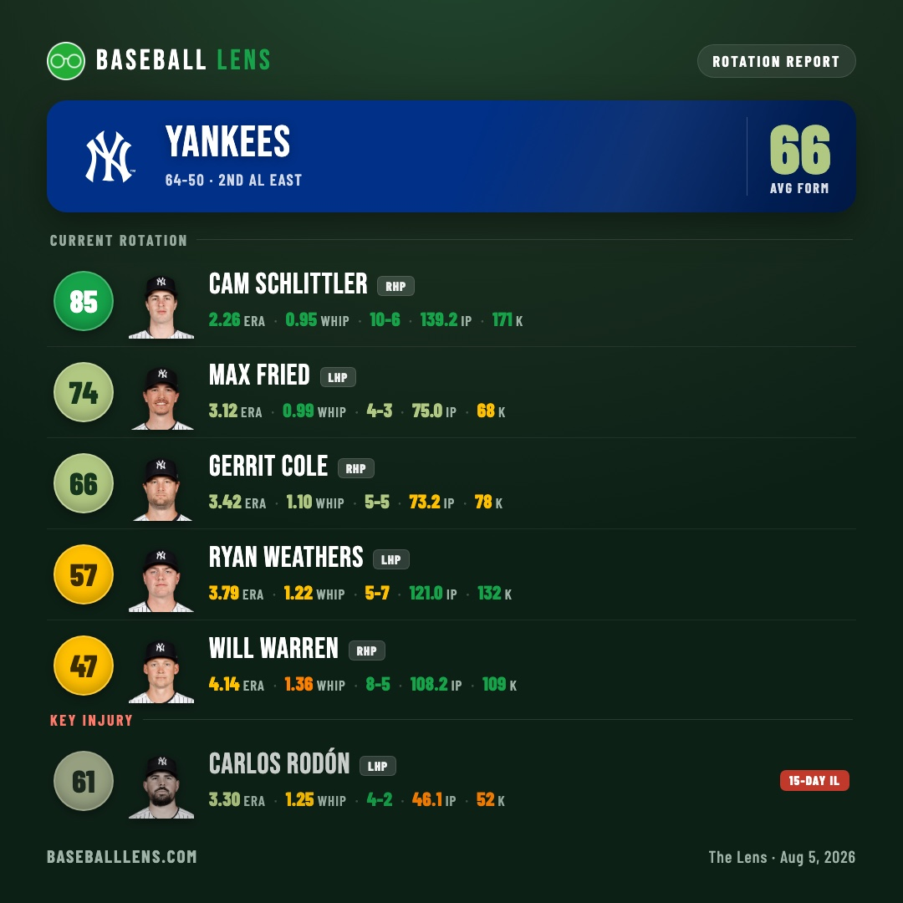
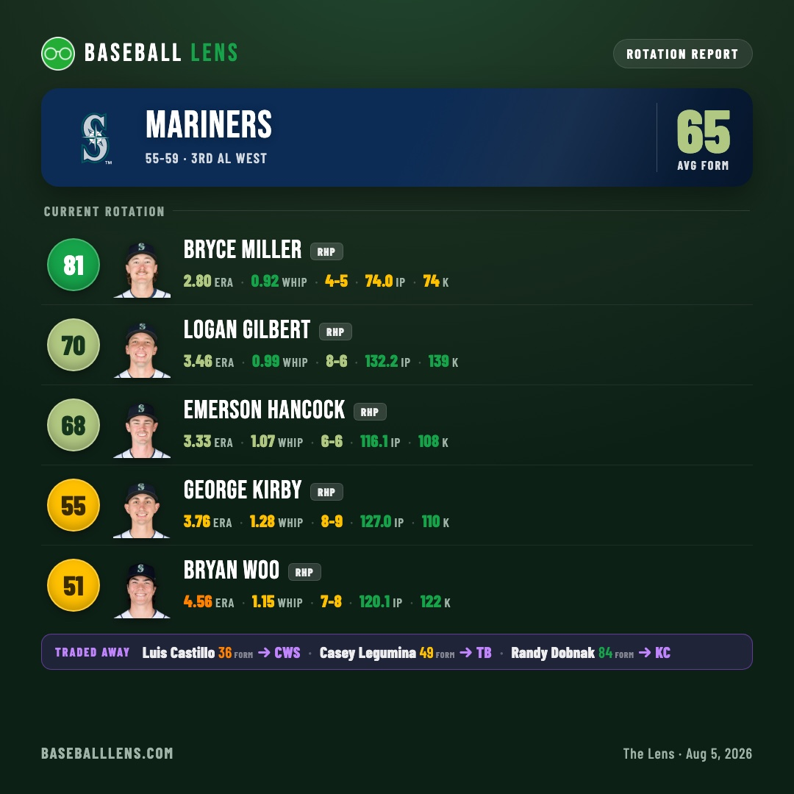
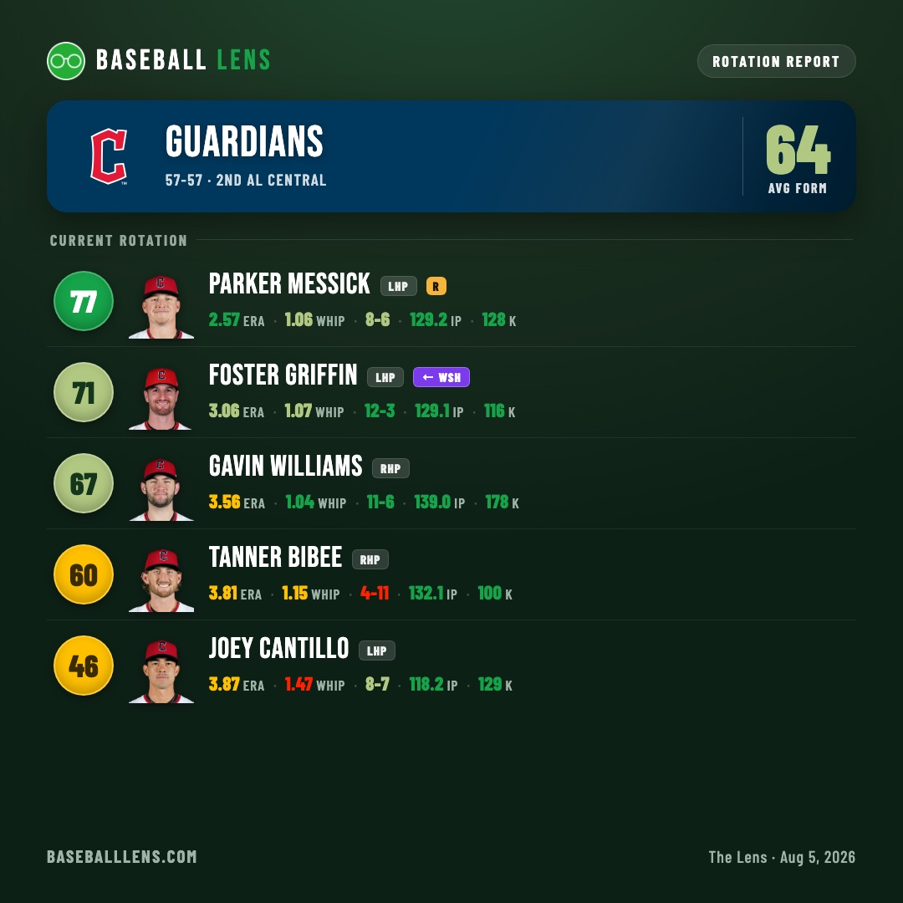
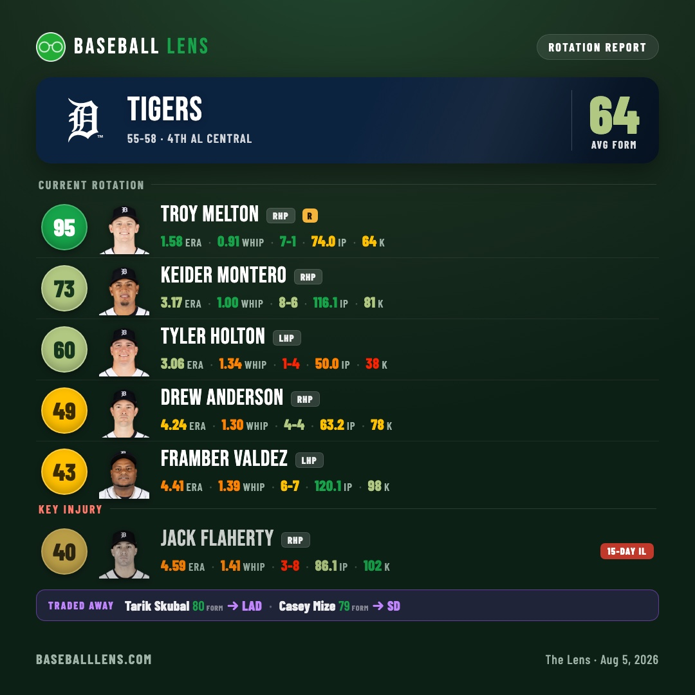

Two Leagues, Two Deadlines
In the National League, the three best rotations belong to the three teams in first place. In the American League, not one of the six best belongs to a division leader — and four of them spent the deadline selling.
The form score paints a starter's season ERA and WHIP onto a 0–100 scale: 100 is untouchable, 50 is a fifth starter, single digits mean the club has a problem it can't hide. A team's number here is the average of the five arms actually taking the ball — chosen by starts made in the last thirty days, read off the game logs rather than the roster page, so a pitcher traded on August 2 shows up on his new team with his season intact. Run all thirty rotations through it and the two leagues have almost nothing in common.
The National League's best rotations are its best teams
| # | Team | Form | Record |
|---|---|---|---|
| 1 | Brewers 1st NL Central | 68.6 | 70-43 |
| 2 | Dodgers 1st NL West | 65.2 | 69-45 |
| 3 | Braves 1st NL East | 58.4 | 68-45 |
| 4 | Pirates 3rd NL Central | 55.6 | 57-58 |
| 5 | Marlins 3rd NL East | 52.8 | 58-56 |
| 6 | Cardinals 4th NL Central | 52.6 | 56-58 |
| 6 | Phillies 2nd NL East | 52.6 | 61-53 |
Team form = average of the current five. The Cardinals and Phillies are level to the decimal.
The top of that table is the cleanest thing in baseball right now: first, first and first. Milwaukee, Los Angeles and Atlanta lead their divisions and own the three best rotations in their league, in the same order.

Milwaukee's 68.6 is the best number in the game and it is almost entirely two men. Jacob Misiorowski sits at 99 — a 1.63 ERA, a 0.73 WHIP and 195 strikeouts in 127 innings, a line that reads like a typo — and Logan Henderson backs him at 82. After that it thins fast: Shane Drohan 63, Robert Gasser 51, and the arm the Brewers bought at the deadline, Dustin May, at 48. Milwaukee leads the league by a stretch and did not need the deadline to do it.

The Dodgers are the one club that spent the deadline buying the top of a rotation instead of the bottom. Tarik Skubal — 2.81, 0.92 WHIP, 122 strikeouts in 102⅔ innings — walks in at 80 and slots second behind Yoshinobu Yamamoto's 83. Eric Lauer had already come over from Toronto in May, and Kris Bubic arrived from Kansas City hurt, on the 60-day list. Los Angeles is 69-45 and just added the best available arm to a staff that already had one.

Atlanta is the softest of the three leaders. Chris Sale is still Chris Sale — 2.08, 143 strikeouts in 117 innings, an 84 — and then it drops a long way: Martín Pérez 65, Bryce Elder 55, Grant Holmes 53, and Tyler Mahle, acquired from San Francisco, at 35. The Braves are 68-45 with the eighth-best rotation in baseball, which is a compliment to their lineup.
The exception proves the shape of it. The Cubs have the second-best record in the National League at 65-49 and the 18th rotation in the game at 51.0; Shota Imanaga's 65 is the only starter they run out above 62.
In the American League, the arms are on the wrong teams
| # | Team | Form | Record |
|---|---|---|---|
| 1 | Yankees 2nd AL East | 65.8 | 64-50 |
| 2 | Mariners 3rd AL West | 65.0 | 55-59 |
| 3 | Guardians 2nd AL Central | 64.2 | 57-57 |
| 4 | Red Sox 3rd AL East | 64.0 | 61-51 |
| 5 | Tigers 4th AL Central | 64.0 | 55-58 |
| 6 | Royals 5th AL Central | 56.6 | 47-67 |
No division leader appears on this table. Boston and Detroit are level at 64.0.
The three teams in first place in the American League — Tampa Bay at 67-46, the White Sox at 59-53, Houston at 59-56 — have the 11th, 20th and 23rd rotations in baseball. Not one of them cracks their own league's top six. And only two of the six above belong to teams with a winning record. The other four are 55-59, 57-57, 55-58 and 47-67.

New York has the league's best staff and did not add a starter to get it. Cam Schlittler leads it at 85 — a 2.26 ERA, a 0.95 WHIP and 171 strikeouts in 139⅔ innings — with Max Fried at 74 and Gerrit Cole at 66 behind him, and Carlos Rodón (61) still on the 15-day list. The Yankees are 64-50 and three and a half games behind a Tampa Bay team whose rotation grades twelve points worse than theirs.

Seattle is the sharpest version of the problem. Bryce Miller 81, Logan Gilbert 70, Emerson Hancock 68, George Kirby 55, Bryan Woo 51 — the second-best rotation in the league, and nobody in it grades below 51, the highest floor of any rotation in either top six. The Mariners are 55-59. At the deadline they sold Luis Castillo to the White Sox, and in June they had already sent Randy Dobnak, an 84, to Kansas City.

Cleveland made the quietest useful buy of the week. Foster Griffin arrived from Washington with a 3.06 ERA and a 12-3 record over 22 starts and immediately became the second-best arm on the staff at 71, behind Parker Messick's 77. The Guardians are 57-57, three games back.
Detroit sold the two best arms on the board

Tarik Skubal went to the Dodgers at an 80. Casey Mize went to San Diego at a 79. Both left for the National League West inside forty-eight hours, and they were the two most valuable starting pitchers who changed hands anywhere.
What Detroit has left is genuinely good at the front. Troy Melton is at 95 — a 1.58 ERA and a 0.91 WHIP, the second-highest form score of any pitcher currently in a big-league rotation, behind only Misiorowski. Keider Montero is a solid 73. And then the Tigers are running bullpen games: Tyler Holton has made one start in the last thirty days and Drew Anderson none, and the two of them are holding the fourth and fifth slots because there is nobody else. The 64.0 is honest arithmetic on a three-man rotation.
What the buyers actually bought
Six starters changed teams and are in somebody's rotation today. Only three of them rank above their new club's average: Skubal (80 against a Dodgers average of 65), Griffin (71 against 64) and Dobnak (84 against 57, for a team that is 47-67). Dustin May at 48 and Tyler Mahle at 35 are the worst starter on their new staff. Lauer, at 50, is fourth of five in Los Angeles.
That is the part worth sitting with. Milwaukee and Atlanta both bought a starter and both lowered their rotation's average doing it — they were buying innings, not quality, and the scale is honest about the difference. Meanwhile the one starter an American League division leader added was Castillo, who arrives in Chicago with a 5.06 ERA and a 36.
The shape of it
The National League spent the deadline making the top of its standings harder to reach: the three teams in first place already had the three best rotations, and the one with the most to gain went out and got the best arm on the market.
The American League did the opposite. Its six best rotations belong to a second-place team, two third-place teams, a fourth and a fifth. Four of the six sold. And the two best pitchers who moved all summer both left the league entirely.
Stats via the MLB Stats API. Form scores, colors and the current-rotation rule are Baseball Lens's own. Numbers through August 5, 2026.